Capa de Red
Escrito por Adrián Quiroga Linares.
Nota
Tema jodido.
4.1 Introducción
La capa de red en el modelo de Internet es la encargada de transportar los datos desde un host de origen hasta un host de destino, controlando el encaminamiento y el reenvío de paquetes a través de la red. Se implementa tanto en los dispositivos terminales como en los routers.
Recordatorio

Host Origen, Host Destino y Router
El host origen es el qué recibe el paquete de la capa de transporte, que encapsula los datos de la aplicación. Se encarga de encapsular el paquete en un datagrama IP que contiene la información necesaria para su entrega, como la dirección de origen y destino. Entrega el datagrama en la capa de enlace.
El host destino desencapsula el datagrama y entrega el segmento a la capa de transporte.
Los routers juegan un papel crucial en la capa de red. Aunque no interactúan directamente con las capas de transporte o aplicación (excepto para control o gestión de red), manejan el reenvío y el encaminamiento de los datagramas basándose en la dirección IP de destino y en su tabla de reenvío.
Reenvío, Encaminamiento y Tablas de reenvío
El reenvío se produce cuando un router recibe un datagrama, utiliza la dirección de destino en la cabecera del datagrama y consulta en su tabla de reenvío para decidir la interfaz de salida adecuada. El encaminamiento es el proceso de determinar la mejor ruta para los paquetes que se envían de un emisor a un receptor. Este proceso es dinámico y utiliza algoritmos de encaminamiento que construyen y actualizan las tablas de reenvío en cada router. Las tablas de reenvío almacenan la información necesaria para el reenvío de paquetes, indicando la interfaz de salida correcta para cada destino. Los valores en estas tablas son determinados por los protocolos y algoritmos de encaminamiento.
**Control de Errores
Suma de comprobación de la cabecera para detectar errores en la cabecera de un paquete IP, se utiliza una suma de comprobación que verifica la integridad de los datos. Si la suma de comprobación no coincide en el receptor, el paquete se descarta.
Seguridad: Originalmente, IP no tenía mecanismos de seguridad. Sin embargo, con el tiempo se han añadido tecnologías como IPsec, que permite la autenticación y cifrado del tráfico IP, transformando el servicio de conexión sin estado en uno con una capa de seguridad añadida.
La capa de red permite la transmisión de paquetes entre hosts a través de routers, usando técnicas de encapsulación, reenvío y encaminamiento. La red IP es no fiable y sin estado, proporcionando un servicio de mejor esfuerzo. Gracias a protocolos auxiliares como ICMP, DHCP y NAT, y mecanismos de control de errores y congestión, la capa de red es capaz de mantener la integridad y eficiencia del flujo de paquetes en redes de gran escala como Internet.
4.2 Redes de Conmutación de Paquetes
Las redes de conmutación de paquetes permiten transmitir datos dividiéndolos en paquetes pequeños. Estos paquetes viajan a través de la red de manera independiente, siguiendo rutas que pueden variar de un paquete a otro. El término "conmutación de paquetes" se refiere al proceso de enviar estos paquetes a través de varios nodos (por ejemplo, routers) que los redirigen hasta su destino.
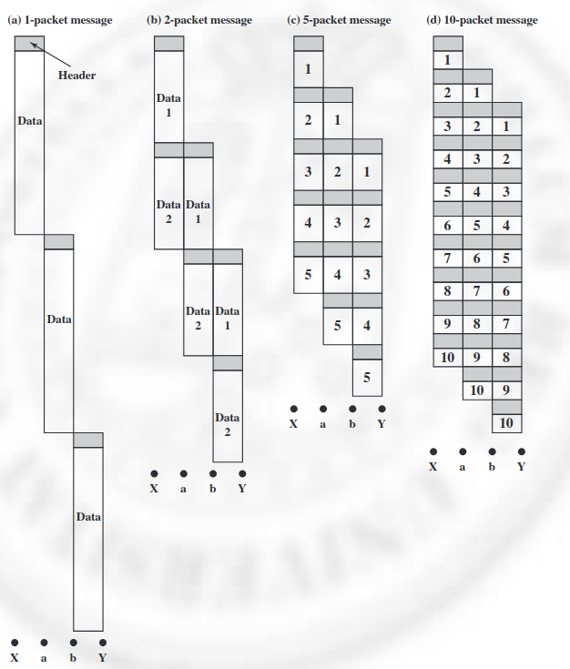
4.2.1 Redes de Datagramas:
Una red de datagramas es un tipo de red de conmutación de paquetes donde los paquetes se envían de manera independiente, sin necesidad de establecer una ruta fija entre el origen y el destino antes de la transmisión. Cada paquete incluye la dirección IP del destino en su cabecera, lo que permite que los routers encaminen los paquetes de manera independiente según su propia tabla de enrutamiento.
En Internet, la capa de red se basa en el Protocolo de Internet (IP), el cual utiliza este modelo de datagramas. Cada paquete contiene información suficiente en su cabecera (como la dirección IP de destino) para que los routers puedan determinar a dónde debe enviarse el paquete siguiente. Los routers en una red de datagramas no mantienen información sobre el estado de las conexiones previas o el tráfico pasado. Cada paquete es tratado como una entidad independiente, y el router no sabe nada sobre los paquetes que llegaron antes o después.
El servicio proporcionado por las redes de datagramas es de mejor esfuerzo (best effort). Esto implica que no se garantiza la entrega de los paquetes, su orden ni el tiempo en que llegarán al destino. Los paquetes pueden llegar desordenados, con retraso o incluso perderse durante la transmisión debido a problemas como congestión en la red.
Los routers toman decisiones de encaminamiento en función de la dirección IP de destino contenida en la cabecera de cada paquete. Estas decisiones se toman consultando las tablas de reenvío de los routers, las cuales pueden actualizarse dinámicamente mediante protocolos de enrutamiento (como OSPF o BGP). La red de datagramas IP permite que diferentes tipos de redes de enlace de datos (Ethernet, Wi-Fi, 4G, etc.) se conecten entre sí, lo que facilita la interconexión de redes heterogéneas.
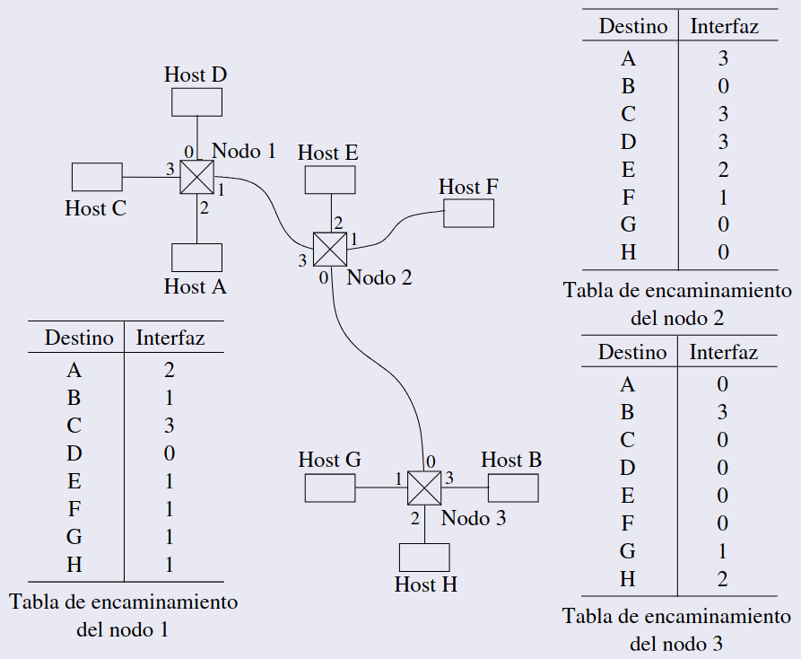
4.2.2 Redes de Circuitos Virtuales:
En contraste con las redes de datagramas, las redes de circuitos virtuales requieren la planificación de una ruta fija antes de que los datos puedan ser enviados. Este proceso implica la creación de un circuito virtual (CV), que es una ruta preestablecida que todos los paquetes siguen durante la comunicación.
Antes de que los paquetes de datos sean enviados, se establece una conexión en la que los routers planifican una ruta fija para todo el flujo de paquetes entre el origen y el destino. Los paquetes de datos, una vez la ruta esté establecida, incluyen un identificador de circuito virtual (VCI) en la cabecera, que los routers utilizan para reencaminar los paquetes. A diferencia de las redes de datagramas, los routers en una red de circuitos virtuales mantienen información de estado acerca de las rutas y las conexiones activas. Cada router tiene una tabla de circuitos virtuales que almacena los identificadores de los circuitos virtuales y las interfaces de salida correspondientes.
La creación de un circuito virtual se inicia cuando el emisor, A, envía una petición de llamada al receptor, B. Esta solicitud llega primero al nodo 1 a través de la interfaz 2. En este punto, el nodo 1 asigna un identificador de circuito virtual (VCI), que en este caso es 5, y reenvía la solicitud a través de su interfaz 1 hacia el siguiente nodo. Este proceso es similar al enrutamiento de datagramas, donde cada nodo debe saber cómo redirigir la solicitud hasta el destino final, B. A medida que la solicitud avanza: - El nodo 2 recibe la solicitud, le asigna un VCI de 9 y la reenvía por su interfaz 0. - El nodo 3 recibe la solicitud, le asigna un VCI de 7 y la envía por su interfaz 3. - Finalmente, el receptor B recibe la solicitud y asigna un VCI de 4, que usará para identificar los paquetes provenientes de A.
Una vez que B acepta la conexión, envía una respuesta de Llamada aceptada de regreso a través del mismo camino pero en sentido inverso. Esta respuesta llega al nodo 3 con VCI 4 en la interfaz 3, permitiéndole completar su entrada en la tabla de circuitos. Del mismo modo, los nodos 2 y 1 actualizan sus tablas con los VCIs de salida correspondientes.
Finalmente, el nodo 1 envía una confirmación de aceptación (ACK) de vuelta a A, que la recibe con el VCI 5. Desde este momento, A usará el VCI 5 para identificar y enviar el resto de paquetes hacia B, estableciendo así el circuito virtual completo.
Una vez que la conexión ha sido establecida, los paquetes subsiguientes llevan el identificador del circuito (VCI). Los routers no necesitan volver a determinar la ruta, ya que esta ha sido preestablecida, y pueden utilizar el VCI para encontrar la interfaz de salida correcta.
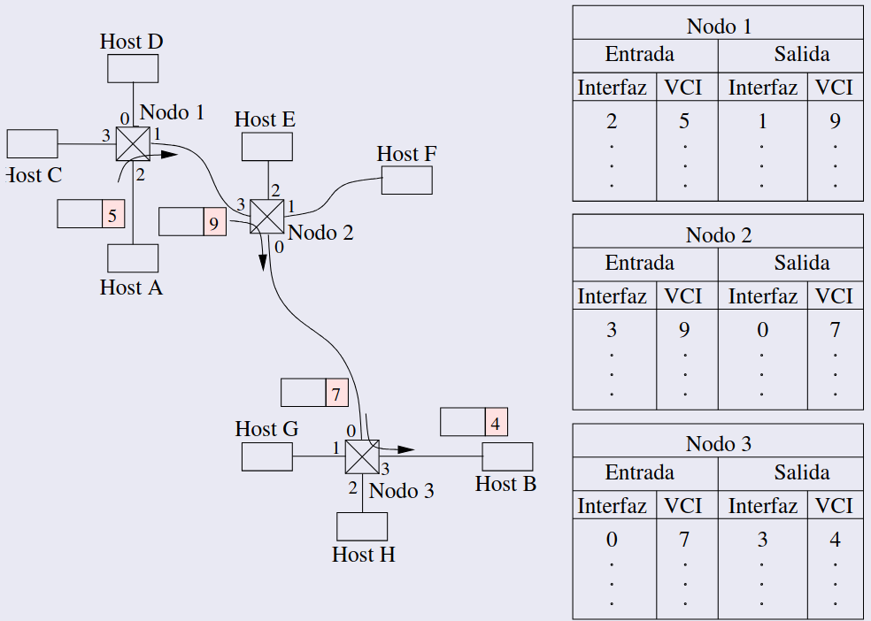
Resumen Comparativo:
| Característica | Redes de Datagramas | Redes de Circuitos Virtuales |
|---|---|---|
| Establecimiento de Ruta | Dinámico, cada paquete tiene su propia ruta. | Estática, se establece una ruta fija. |
| Estado de los Routers | Sin estado, no mantienen información de paquetes previos. | Con estado, mantienen información de las conexiones. |
| Identificador de Ruta | Basado en la dirección IP de destino. | Basado en un identificador de circuito virtual (VCI). |
| Confiabilidad | No fiable, no se garantiza la entrega, orden o tiempo. | Más fiable, pero depende de la ruta establecida. |
| Ejemplo | Enrutamiento de un paquete en Internet. | Conexión telefónica en una red de conmutación de circuitos. |
Ambos modelos tienen aplicaciones diferentes según las necesidades de la red. Las redes de datagramas son más flexibles y escalables, lo que las hace ideales para Internet, mientras que las redes de circuitos virtuales proporcionan una calidad de servicio más consistente y son más adecuadas para aplicaciones que requieren un flujo continuo de datos, como las videollamadas o las comunicaciones en tiempo real.
4. 3 Algoritmos de Encaminamiento
Los algoritmos de enrutamiento son fundamentales para determinar el camino más eficiente que deben seguir los paquetes de datos desde un origen hasta un destino en una red. Estos algoritmos se basan en el concepto de grafos, donde los routers son los nodos y los enlaces entre ellos son las aristas. El coste de un enlace puede ser determinado por diversos factores, como la distancia, la velocidad, el nivel de congestión o incluso el coste económico del enlace.
4.3.1 Clasificación de los algoritmos de enrutamiento
- Algoritmos globales (de estado de los enlaces, EE): Estos algoritmos requieren que cada nodo tenga conocimiento completo sobre la topología de la red, es decir, que conozca todos los enlaces y sus costos. Cada router utiliza esta información para calcular de manera independiente su tabla de enrutamiento, determinando el camino más corto hacia cada destino. El término "estado de los enlaces" hace referencia al hecho de que los nodos conocen el estado de todos los enlaces. Esto implica que el algoritmo realiza un proceso similar al de resolver un problema de camino mínimo en un grafo ponderado.
Ejemplo de algoritmo global: OSPF (Open Shortest Path First), que se utiliza en redes de área extensa (WAN) y utiliza el algoritmo de Dijkstra para encontrar la ruta más corta.
- Algoritmos descentralizados (de vector de distancias, VD): En estos algoritmos, cada nodo no tiene conocimiento completo de la topología de la red. En cambio, colabora con los nodos vecinos intercambiando información de distancias. Inicialmente, cada nodo conoce únicamente las distancias a sus nodos vecinos. A través de un proceso iterativo, los nodos comparten y actualizan esta información hasta que todos los nodos tienen conocimiento de las distancias a otros nodos de la red.Este tipo de algoritmo se denomina vector de distancias porque cada nodo mantiene un vector con las distancias a los nodos vecinos.
Ejemplo de algoritmo de vector de distancias: RIP (Routing Information Protocol), que envía mensajes periódicos a los vecinos para actualizar la información de enrutamiento.
- Algoritmos estáticos y dinámicos: Estáticos: Solo se actualizan cuando cambia la topología de la red (por ejemplo, si se agregan o eliminan nodos o enlaces) o si se realizan cambios manuales en los parámetros. Dinámicos: Se ejecutan de forma periódica y automática para adaptarse a cambios en la red, como modificaciones en la carga o el estado de los enlaces. Los algoritmos dinámicos son más comunes en Internet, ya que permiten adaptarse de forma continua a las variaciones en la red.
Ejemplo de algoritmo dinámico: BGP (Border Gateway Protocol), que es utilizado para el enrutamiento entre diferentes sistemas autónomos (AS) en Internet.
- Algoritmos sensibles a la carga e insensibles a la carga: Sensibles a la carga: El coste de los enlaces cambia dinámicamente en función de la carga o congestión de la red. Esto permite que el algoritmo adapte los caminos de enrutamiento según el tráfico. Insensibles a la carga: El coste de los enlaces es constante y no cambia con la congestión de la red. La mayoría de los algoritmos de enrutamiento actuales en Internet son insensibles a la carga. Problemas de oscilación: Si un algoritmo es sensible a la carga, pueden ocurrir oscilaciones de enrutamiento, donde los caminos más cortos cambian de forma continua. Un enlace muy congestionado podría tener un coste elevado y ser evitado, pero luego, al liberar la congestión, se vuelve atractivo nuevamente, lo que puede generar fluctuaciones en el enrutamiento.
De los algoritmos sudar btt. **Saltar al 4.4**
4.3.2 Algortimo de Dijkstra
El algoritmo de Dijkstra es un algoritmo de búsqueda de caminos mínimos, utilizado principalmente en redes de computadoras y grafos para encontrar el camino más corto desde un nodo de origen a todos los demás nodos en un grafo ponderado (con costes en los arcos o enlaces).
El enfoque de "Forward Search" del algoritmo de Dijkstra se basa en mantener dos listas: Confirmado y Provisional, para calcular la tabla de rutas de un nodo a partir de los paquetes de estado de enlace (LSP) recibidos. Cada nodo N quiere calcular su tabla de enrutamiento considerando los enlaces con otros nodos y sus costes. Tiene una complejidad de O(n²)
Inicialización:
-
Lista Confirmada: Es la lista de nodos cuyo camino mínimo ya se ha encontrado. Se inicia con una entrada para el nodo de partida N con un coste de 0, indicando que el coste para llegar a sí mismo es cero. La entrada tiene el formato
(N, 0, -):(M, 5, L)-> N llega a M con coste 5 a través de L.-significa que no hay siguiente salto porque es el nodo de partida.
-
Lista Provisional: Es la lista de nodos que aún no han sido definitivamente asignados, pero cuyas distancias son conocidas parcialmente. Inicialmente está vacía.
Pasos del algoritmo:
-
Seleccionar el Nodo S: El algoritmo toma el último nodo añadido a la lista Confirmado. Este nodo S es el nodo del que se calcularán las distancias hacia sus nodos vecinos.
-
Examinar los Vecinos de S:
- Para cada vecino V de S (según el LSP de S), el algoritmo calcula el coste para alcanzar V como la suma del coste de N a S (que es el coste ya conocido en Confirmado) y el coste de S a V (que se obtiene del LSP de S).
- Si V no está en ninguna de las listas (ni Confirmado ni Provisional), se añade a la lista Provisional con la entrada
(V, Coste, S), dondeCostees la suma de las distancias ySes el siguiente salto. - Si V ya está en la lista Provisional, pero el nuevo coste calculado es menor que el coste previamente almacenado en esa lista, se reemplaza la entrada con el nuevo coste y el siguiente salto correspondiente, que es el nodo S.
-
Actualizar la Lista Confirmado:
- Si la lista Provisional está vacía, el algoritmo termina, ya que no hay más nodos por explorar.
- Si no está vacía, se selecciona el nodo de Provisional con el menor coste y se mueve a Confirmado, marcando ese nodo como definitivamente alcanzado con el coste mínimo.
-
Repetir el Proceso:
- El proceso se repite desde el paso 1, pero ahora se toma el siguiente nodo con el menor coste en la lista Provisional. Este nodo se convierte en el nuevo nodo S y se repite el proceso de exploración y actualización.
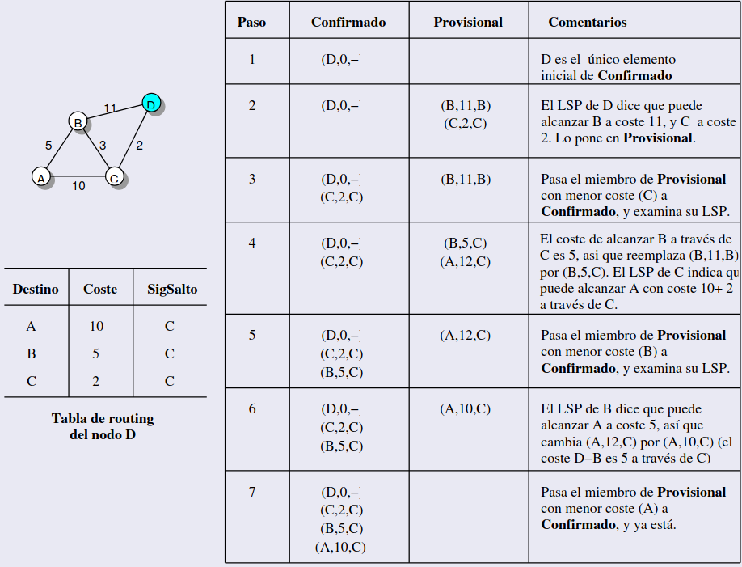
4.3.3 Algoritmo de Vector de Distancias (VD)
El encaminamiento de vector de distancias es un método descentralizado de enrutamiento, donde cada nodo en una red colabora con sus vecinos para determinar la distancia mínima hacia todos los demás nodos. Este método se basa en la propagación gradual de la información de distancias, permitiendo que cada nodo descubra rutas óptimas hacia todos los destinos mediante iteraciones sucesivas.
Funcionamiento del Algoritmo
-
Inicialización:
- Cada nodo conoce inicialmente solo el coste directo hacia sus vecinos inmediatos. Estos costes directos se almacenan en una tabla de distancias, donde cada entrada indica el nodo vecino y el coste del enlace hacia él.
- No tiene información sobre nodos más alejados en la red.
-
Intercambio de Información:
- Cada nodo comunica periódicamente a sus vecinos lo que sabe hasta ese momento sobre las distancias mínimas hacia los otros nodos.
- La información compartida es esencialmente el vector de distancias del nodo que envía el mensaje, es decir, sus estimaciones actuales de distancia hacia cada destino posible.
- Al recibir la información de un vecino, cada nodo calcula nuevas rutas y actualiza sus distancias si encuentra valores menores.
-
Actualización de Distancias:
- Para un nodo
con un vecino , cuyo enlace tiene coste : - Si
informa de que su distancia a otro nodo es , el nodo puede calcular su distancia a a través de como: - Esto significa que la distancia de
a a través de es la suma del coste del enlace de a y la distancia de a reportada por . - Si el valor
es menor que la distancia almacenada actualmente en la tabla de distancias de hacia , actualiza su distancia mínima hacia y marca a como el siguiente salto hacia .
- Si
- Para un nodo
-
Iteración y Convergencia:
- Este proceso continúa iterativamente: cada nodo sigue intercambiando información con sus vecinos y recalculando rutas hasta que ya no se producen cambios en las tablas de distancias de los nodos.
- En ese momento, el algoritmo converge, y cada nodo ha encontrado el camino más corto hacia todos los otros nodos de la red.
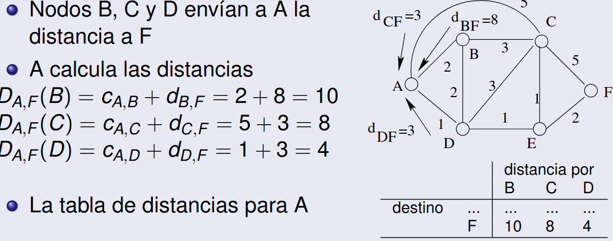
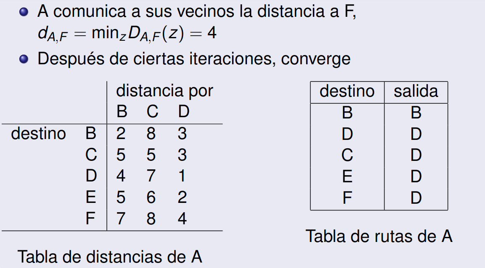
El problema es que si un nodo calcula mal sus distancias jode a todos los demás, por lo que es poco robusto.
4.3.4 Encaminamiento Jerárquico
El ruteo jerárquico es una estrategia de enrutamiento utilizada en redes grandes, como Internet, para organizar y simplificar la gestión de los datos y mejorar la eficiencia del enrutamiento. En este enfoque, la red completa se divide en sistemas autónomos (SA), que son zonas o regiones bajo un control administrativo común. Cada sistema autónomo (SA) puede pertenecer, por ejemplo, a una empresa o a una organización, y opera su propia red interna. Los routers solo conocen el encaminamiento en su región. Los routers pasarela frontera: centralizan el tráfico de salida del SA.
Hay dos niveles de encaminamiento:
- Intradominio: cada SA puede elegir algoritmo
- Interdominio: común para todos los SA
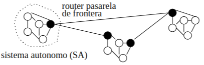
4.4 Encaminamiento en Internet (Protocolos de Rutado)
El encaminamiento en Internet se basa en protocolos de rutado, que permiten a los routers decidir el mejor camino para enviar paquetes de datos a su destino. Internet se divide en diferentes sistemas autónomos (SA), que son redes administradas de forma independiente. Estos sistemas usan distintos protocolos de rutado para decidir cómo enviar datos tanto dentro del SA (rutado intra-autónomo) como entre SAs (rutado inter-autónomo).
4.4.1 RIP (Routing Information Protocol):
Usa el rutado intra-autónomo, basado en vector de distancias (VD). Funciona sobre UDP (puerto 520). En este protocolo, cada router mantiene una tabla con las distancias a otros routers de la red. RIP intercambia información solo entre routers vecinos, con el costo de cada enlace establecido en 1, y puede enviar paquetes a través de un máximo de 15 saltos. Si un router desea información sobre una ruta, envía un mensaje de petición a sus vecinos y recibe como respuesta una lista de redes destino con su distancia.
-
Mensajes de petición RIP: solicitan información
-
Mensajes de respuesta RIP: envían una lista de hasta 25 redes internas al SA (estos también se envían de forma automática cada 30. En caso de que no se reciba respuesta en 180 segundos, se considera caído).
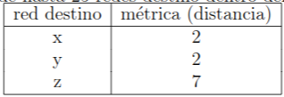
4.4.2 OSPF (Open Shortest Path First):
Protocolo de enrutamiento intra-autónomo basado en el estado de enlace (EE) para intradominios. Funciona sobre su propio protocolo de red, utilizando el puerto 89.
OSPF es un protocolo avanzado en comparación con RIP, diseñado para reemplazarlo en redes de mayor complejidad. Utiliza un algoritmo basado en el estado de enlace, difundiendo información sobre la red a todos los nodos cuando ocurren cambios significativos, y actualizándose automáticamente cada 30 minutos. Cada router mantiene un mapa completo de la red, lo que permite calcular el camino más corto mediante el algoritmo de Dijkstra. Los mensajes OSPF incluyen mensajes HELLO enviados periódicamente a cada vecino para verificar su conectividad, y permite también consultar a un vecino para obtener la información de estado completa. Los costos de cada enlace son definidos por el administrador de la red.
OSPF es más seguro que RIP, ya que utiliza un protocolo de transporte propio en el que todos los mensajes están autenticados, permitiendo solo la comunicación entre routers autenticados. Siempre se elige el camino más corto disponible, y en caso de varios caminos con el mismo costo, OSPF puede repartir el tráfico entre ellos.
OSPF permite la subdivisión del Sistema Autónomo (SA) en áreas jerárquicas, lo que mejora la organización. Cada área ejecuta OSPF internamente, y las comunicaciones entre áreas se gestionan mediante routers de frontera de área (ABR), que encaminan el tráfico hacia fuera del área. Estos ABRs están conectados entre sí en una área troncal. Para enrutar fuera del SA, OSPF también utiliza un router de frontera del SA (ASBR).
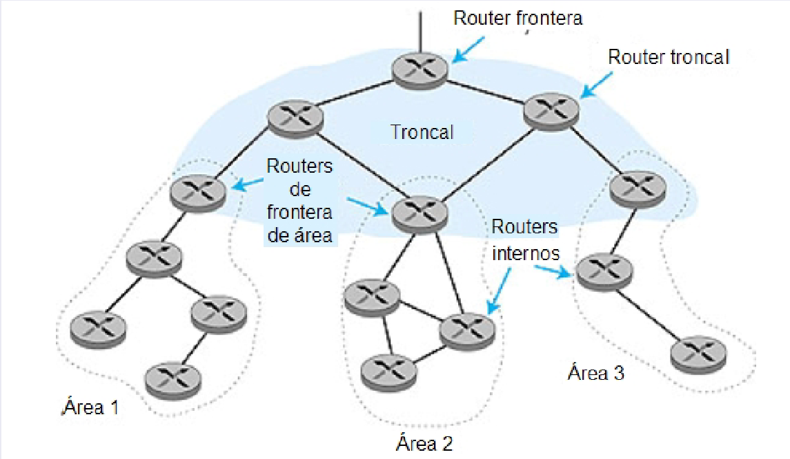
4.4.3 BGP (Border Gateway Protocol):
Protocolo de enrutamiento inter-autónomo, basado en vector de rutas. Funciona sobre TCP (puerto 179).
BGP es el protocolo estándar en Internet para la comunicación entre sistemas autónomos (SAs) en su versión BGP4. Está diseñado para el enrutamiento entre dominios y permite a los routers frontera (routers pasarela) intercambiar rutas completas entre SAs. A diferencia de los protocolos de enrutamiento por distancia, BGP utiliza un vector de rutas, donde cada router comparte la ruta completa a cada destino, permitiendo la aplicación de políticas de enrutamiento específicas. En BGP, se usa E-BGP para la comunicación entre routers de diferentes SAs y I-BGP para la comunicación entre routers dentro del mismo SA.
Identificación de SAs: Cada SA en BGP se identifica mediante un número de sistema autónomo (ASN) único, facilitando el control y la organización de las rutas.
Ejemplo: Supongamos que un mensaje BGP describe cómo llegar a la red 128.19.4.0/24. La ruta podría ser algo como SA1/SA2/SA3/SA4, lo que indica el camino exacto que el paquete debe seguir al atravesar distintos SAs.
Políticas de Enrutamiento: BGP permite a los administradores de cada SA definir políticas de enrutamiento específicas, como evitar redirigir el tráfico a través de ciertos proveedores o filtrar rutas hacia determinados destinos. Esto permite un control granular sobre el flujo de tráfico entre SAs.
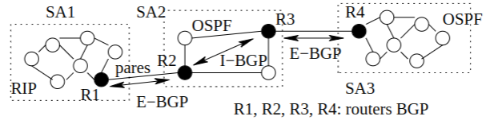
## 4.4.4 Resumen - **RIP**: Protocolo de enrutamiento sencillo que intercambia solo la distancia a redes vecinas y está limitado a un máximo de 15 saltos. - **OSPF**: Protocolo de estado de enlace que utiliza un mapa completo de la red, actualizando la información periódicamente y calculando el camino más corto con el algoritmo de Dijkstra. Permite balanceo de carga entre rutas de igual costo y organización jerárquica mediante áreas. - **BGP**: Protocolo de enrutamiento inter-autónomo que intercambia rutas completas entre SAs, permitiendo la aplicación de políticas de enrutamiento detalladas y el control granular de rutas según las necesidades de cada operador.Este sistema asegura que dentro de cada SA se determine la ruta óptima de forma eficiente, mientras que entre SAs los paquetes siguen rutas específicas optimizadas y controladas por cada operador en función de sus políticas de enrutamiento.
4.5 Protocolo de Internet (IP)
Define el formato de las direcciones IP, los campos de los datagramas, y cómo los routers procesan estos datagramas. Los routers leen estos campos para dirigir el tráfico a su destino correcto. Fue diseñado para conectar redes diferentes. La fiabilidad recae sobre las capas superiores (TCP).
4.5.1 Direccionamiento IPv4
Las direcciones IPv4 son números de 4 bytes (32 bits) que se expresan en un formato de cuatro números decimales separados por puntos, donde cada número representa 1 byte (8 bits). Un ejemplo de dirección IPv4 es 192.168.1.1. Cada dispositivo conectado a Internet (hosts, routers, etc.) tiene una dirección IP por cada interfaz (punto de conexión a la red). Por ejemplo, en Linux, una interfaz de tarjeta Ethernet puede llamarse eth0, una conexión serie ppp0, una conexión USB usb0, y una conexión inalámbrica wlan0.
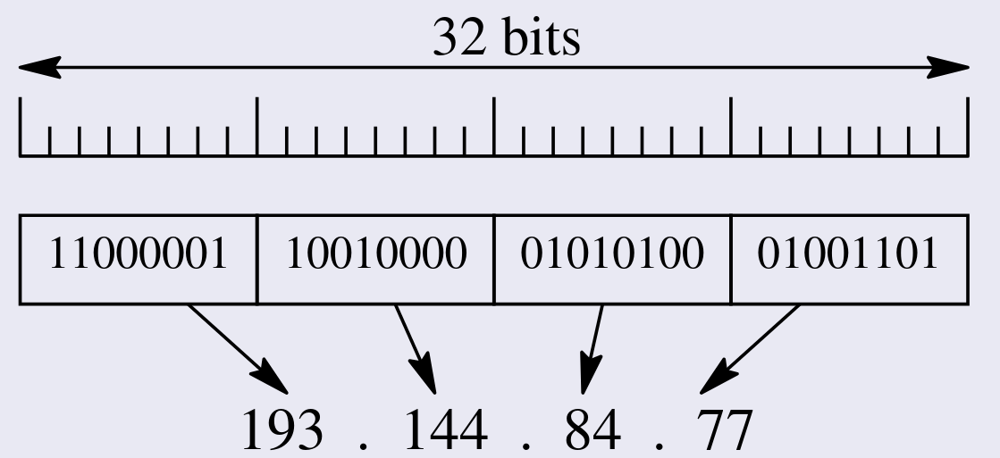
Direcciones IP
Una dirección IP tiene dos partes:
- Parte de red: Identifica la red en la que está el dispositivo.
- Parte de host: Identifica el dispositivo específico en esa red.
Clases de Dirección IP: Antiguamente las direcciones IP se agrupaban en clases, según los primeros bits de la dirección:
- Clase A: Comienza con
0. Tiene una gran cantidad de hosts por red, ideal para organizaciones grandes. - Clase B: Comienza con
10. Es adecuada para empresas grandes y medianas. Ejemplo:172.16.0.0. - Clase C: Comienza con
110. Se utiliza para pequeñas redes. Ejemplo:192.168.0.0. - Clase D: Comienza con
1110, destinada para multicast (envío de datos a varios dispositivos). - Clase E: Comienza con
1111, reservada para usos futuros.
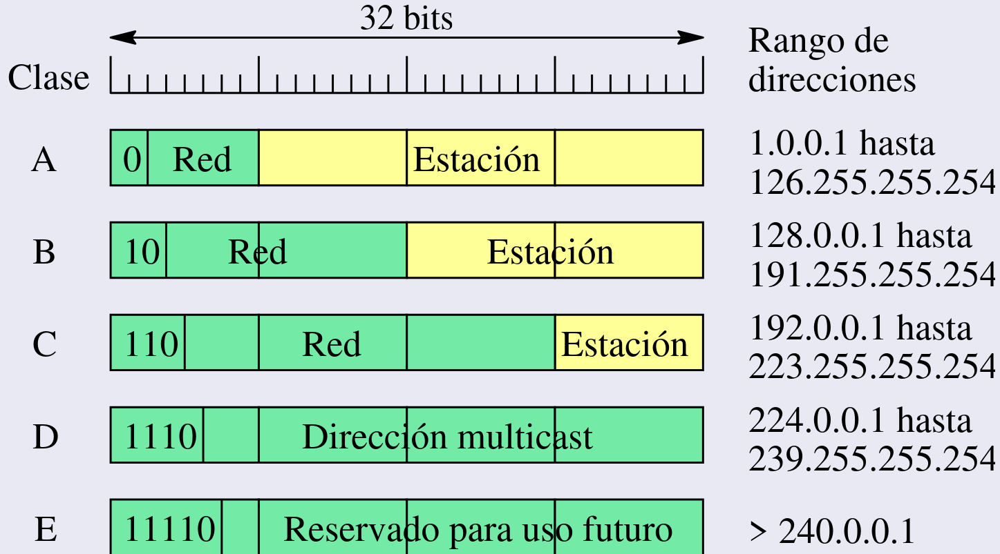
Algunas direcciones reservadas por el IANA:
- 0.0.0.0 → Esta red. Usada para arrancar sistemas sin disco (como en el protocolo DHCP) y en el encaminamiento por defecto.
- 127.0.0.0 – 127.255.255.255 → La propia estación (dirección de loopback). Comúnmente se usa la 127.0.0.1.
- 240.0.0.0 – 255.255.255.254 → Reservadas para uso futuro.
- 255.255.255.255 → Difusión a toda la red (usada en el protocolo DHCP).
Info
En cada red, existe una dirección de broadcast que se utiliza para enviar mensajes a todos los dispositivos de la red al mismo tiempo. Por ejemplo, si un router necesita enviar una actualización de red o un dispositivo quiere buscar otros dispositivos conectados, puede enviar un mensaje a la dirección de broadcast y todos los equipos dentro de esa red lo recibirán. Para calcularla basta con poner todos los bits de la parte de host a 1. Son las direcciones que terminan por 255. Las direcciones que acaban en 0 también son especiales porque permiten identificar a la red.
4.5.2 Subredes
Subredes son divisiones más pequeñas dentro de una red. Crear subredes permite dividir un bloque grande de direcciones IP en varias redes más pequeñas, cada una con su propio rango de direcciones. Las subredes son útiles para mejorar el rendimiento, la organización y la seguridad en una red. Para subdividir una red en varias subredes usamos máscaras.
Las subredes nos permiten ahorrarnos IPs porque las asignan de forma más eficiente, adaptándose a la cantidad de dispositivos en cada parte de la red. Además las redes grandes pueden ser difíciles de gestionar por lo que dividirla en subredes ayuda a segmentar el tráfico y tener mayor control. Al aislar cada subred se obtiene mayor seguridad limitando la comunicación entre dispositivos de diferentes subredes.
Importante
La dirección base y la de broadcast están reservadas.
Máscara de subred
La máscara de subred se utiliza para dividir una red IP en subredes más pequeñas, usando parte del campo de la dirección de red para identificar la subred. Una máscara de subred es un conjunto de 32 bits, donde los primeros n bits (los más significativos) están en 1 para indicar la porción de red y subred, y los restantes 32 - n bits están en 0 para identificar los hosts dentro de esa subred.
- Formato: Las máscaras se representan en notación de longitud de prefijo (por ejemplo,
/27) o en formato decimal (por ejemplo,255.255.255.224). - Ejemplo de máscara /27:
/27significa que los primeros 27 bits están en 1 y los últimos 5 en 0.- En formato binario:
11111111.11111111.11111111.11100000, equivalente en decimal a255.255.255.224.
Consideremos una 192.168.17.0 con una máscara de subred /27 (o 255.255.255.224):
Los primeros 24 bits (192.168.17) representan la red principal. Los siguientes 3 bits indican la subred específica dentro de esta red. Los últimos 5 bits identifican el host o estación dentro de esa subred.
Número de subredes: Como tenemos 3 bits para la subred, se pueden crear
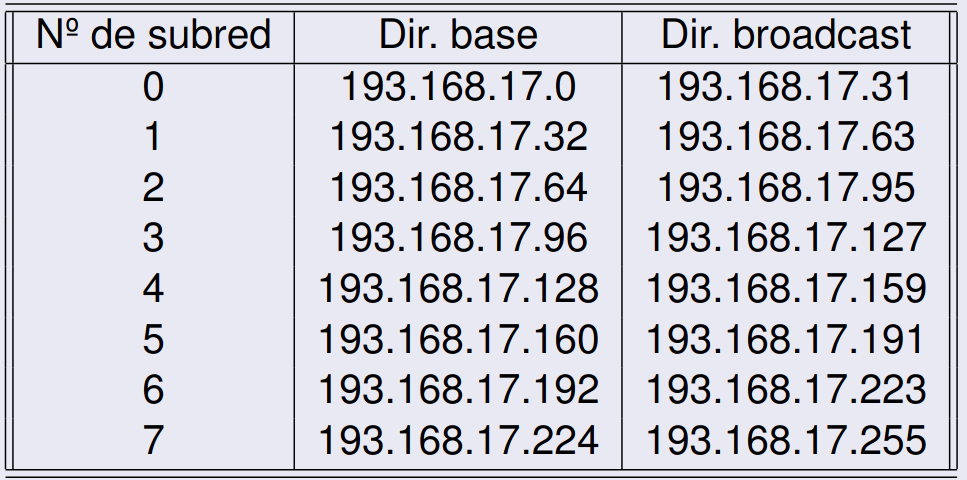
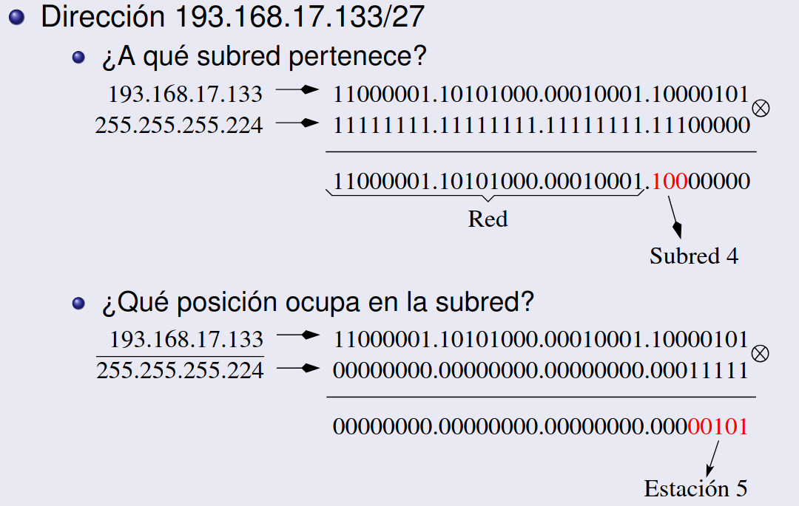
Redes sin clase, direcciones CIDR (Classless Inter-Domain Routing)
En 1993, el sistema tradicional de direcciones IP basado en clases (A, B, C) fue reemplazado por CIDR (Classless Inter-Domain Routing). Este cambio permitió dividir las direcciones IP en redes y hosts con mayor flexibilidad, lo cual ayudó a mejorar la administración de redes y el uso eficiente de las direcciones IP.
En CIDR, una dirección IP no está restringida a una clase fija. En su lugar, la división entre la parte de red y la parte de host de la dirección IP puede ubicarse en cualquier posición. Esto se indica mediante la máscara en notación /x, donde x es el número de bits dedicados a la red.
Dirección CIDR: 193.144.48.0/20
Esto indica que los primeros 20 bits representan la red, y el resto de los bits, los hosts.
En binario: 1100 0001 1001 0000 0011 0000 0000 0000
- Parte de red: Primeros 20 bits →
193.144.48.0 - Parte de host: Últimos 12 bits → identifican dispositivos dentro de la red
193.144.48.0/20
Diferencia Redes con Clase y CIDR
La diferencia entre el esquema tradicional de clases de red y las redes sin clase (o CIDR, Classless Inter-Domain Routing) radica en cómo se asignan y manejan los rangos de direcciones IP y la flexibilidad para dividir y agrupar las redes.
Redes con Clase (Clases A, B, C)
En el esquema de redes con clase: Las direcciones IP se dividen en clases (A, B, C, D y E), y cada clase tiene un rango de direcciones IP fijo y una longitud de prefijo predeterminada:
- Clase A: Prefijo /8 (los primeros 8 bits identifican la red), cubriendo un rango de IPs muy amplio.
- Clase B: Prefijo /16 (los primeros 16 bits identifican la red).
- Clase C: Prefijo /24 (los primeros 24 bits identifican la red).
La máscara de subred era implícita para cada clase y no se podía cambiar. Esto significa que una red de clase C, por ejemplo, siempre tendría una máscara de 255.255.255.0 (/24), lo que permite un máximo de 254 hosts por red.
El esquema es rígido y puede llevar a desperdicio de direcciones IP. Por ejemplo, si una organización necesitaba más de 254 hosts, no podía usar clase C y tendría que usar una clase B, que proporcionaba 65,534 direcciones, mucho más de lo necesario.
Redes Sin Clase (CIDR)
CIDR fue introducido para superar las limitaciones del esquema de clases y permitir una asignación más flexible y eficiente de las direcciones IP.
En CIDR, no se utilizan las clases tradicionales (A, B, C) para determinar el tamaño de la red. En cambio, se usa una notación de prefijo (por ejemplo, /18, /24, /12, etc.), que indica cuántos bits de la dirección IP identifican la red.
Con CIDR, puedes tener una máscara de subred de cualquier longitud, independientemente de la "clase" de la dirección IP. Esto permite subdividir redes grandes o combinar redes pequeñas sin las restricciones de las clases:
Por ejemplo, 192.168.1.0/26 define una red que usa 26 bits para la porción de red y 6 bits para hosts, lo que permite tener 4 subredes dentro de lo que tradicionalmente sería una red de clase C.
CIDR permite crear subredes más pequeñas o "superredes" para asignar solo el número exacto de direcciones IP necesario, reduciendo el desperdicio de direcciones. También permite la agregación de rutas en la tabla de enrutamiento, simplificando la gestión de redes en Internet.
Tablas de Reenvío
Tabla de Reenvío de un Host
La tabla de reenvío es la estructura que un host utiliza para determinar cómo enviar paquetes a su destino. Ejemplo para el host 200.1.3.3:
| Red destino | Gateway | Interfaz |
|---|---|---|
127.0.0.0/8 |
* | lo |
200.1.3.0/24 |
* | eth0 |
0.0.0.0/0 (por defecto) |
200.1.3.1 |
eth0 |
- 127.0.0.0/8 → Dirección de loopback (interfaz
lo), utilizada para pruebas locales en el host. - 200.1.3.0/24 → Red local, por lo que los paquetes pueden salir directamente por la interfaz
eth0. - 0.0.0.0/0 (por defecto) → Cualquier otra dirección de destino se envía a través de
200.1.3.1usandoeth0.
Para consultar la tabla de rutas en Linux, usa el comando:
route [-n]
Tabla de Reenvío de un Router
La tabla de reenvío en un router incluye información detallada sobre las redes conectadas, interfaces y gateways.
| Destino | Interfaz | Gateway | Métrica |
|---|---|---|---|
194.24.0.0/21 |
inti |
* | i saltos |
194.24.8.0/22 |
intj |
* | j saltos |
194.24.16.0/20 |
intk |
* | k saltos |
0.0.0.0/0 (por defecto) |
intx |
* | x saltos |
[! Info] El gateway (o puerta de enlace) es la dirección de un dispositivo de red que sirve de punto de acceso para enviar datos a otras redes. En una tabla de reenvío de un router, el gateway indica hacia dónde debe dirigirse el tráfico que no pertenece a la red local. Es especialmente útil cuando el tráfico necesita salir de la red local hacia redes más amplias, como internet o redes externas. El gateway está marcado con
*, lo cual indica que para las rutas especificadas no es necesario un gateway intermedio, ya que el tráfico puede enviarse directamente a través de la interfaz correspondiente. Por ejemplo el router de casa.
Reenvío de un paquete: coincidencia del prefijo más largo
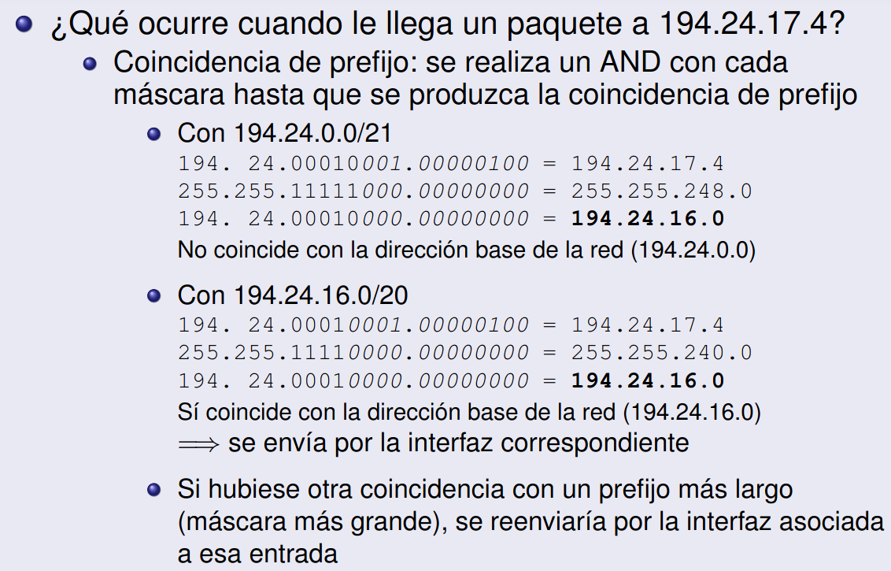
Agregación de rutas
Es un proceso que realizan los routers por el cual toman un grupo de direcciones de redes contiguas (bloque CIDR) y las resumen en una sola dirección de red común a todas esas redes.
La ventaja principal es la optimización del enrutamiento en grandes redes corporativas, ya que los routers tienen que mantener menos entradas en sus tablas de enrutamiento y en consecuencia ganan estabilidad. Si un router tiene conectadas 10 redes contiguas, solo publicará el resumen de la ruta CIDR a sus vecinos.
Para obtener la dirección IP base de agregación de rutas de debemos comprobar que sean redes contiguas y, a continuación, hacer la operación AND sobre las direcciones base de esas redes. Para obtener la dirección de broadcast debemos poner todos los bits que tenían comunes al hacer la operación AND a 1.
En la imagen podemos ver que en la tabla de reenvío del router B tendríamos una entrada para A, B, C ,D y E, lo que pasa es que C, D y E van a ser consecutivas y reenviarse por la misma interfaz, así que se agrupan en una única entrada y cuando llegue un paquete de cualquiera de esas redes van a ser reenviadas por al interfaz RB2 y cuando llegue al router C ya se decidirá a donde va cada paquete.
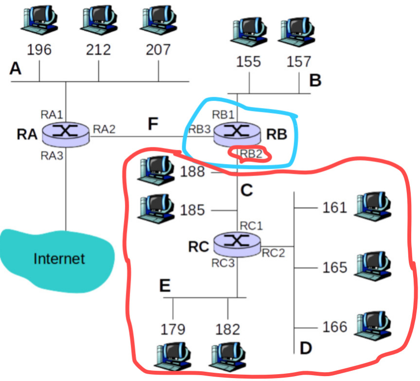
4.5.3 Datagrama IP
Nota
Saber diferencias datagrama IPv4 e IPv6
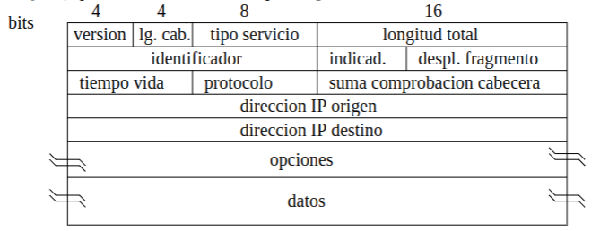
Versión (4 bits): Indica la versión del protocolo IP utilizado. Normalmente es IPv4 (valor 4) o IPv6 (valor 6). Longitud de Cabecera (lg. cab.) (4 bits): Muestra la longitud de la cabecera en múltiplos de 4 bytes. Esto permite determinar dónde comienza la sección de datos. Tipo de Servicio (8 bits): Define la prioridad y calidad del servicio del paquete, permitiendo especificar si debe ser tratado con baja latencia, alta fiabilidad, etc. Longitud Total (16 bits): Es la longitud total del paquete IP, incluida la cabecera y los datos. Permite al receptor saber cuándo termina el paquete. Identificador (16 bits): Usado para identificar de forma única un fragmento de un datagrama IP. Es útil cuando un paquete debe dividirse en fragmentos para atravesar una red con un tamaño de unidad de transmisión más pequeño. Indicadores (indicad.) (3 bits): Indican si el paquete puede ser fragmentado y si es el último fragmento de un conjunto de fragmentos.
Desplazamiento de Fragmento (despl. fragmento) (13 bits): Indica la posición de un fragmento dentro del datagrama original, facilitando la reconstrucción del paquete en el receptor.
Tiempo de Vida (8 bits): Controla el tiempo de vida del paquete, especificando el número máximo de saltos (routers) que puede atravesar. Se decrementa en cada router, y cuando llega a cero, el paquete es descartado.
Protocolo (8 bits): Indica el protocolo de la capa superior que se encuentra en los datos del paquete (por ejemplo, TCP o UDP). Esto ayuda a dirigir el paquete al protocolo adecuado. Suma de Comprobación de Cabecera (16 bits): Campo de verificación para la cabecera IP. Permite comprobar la integridad de la cabecera, detectando errores en la transmisión. Dirección IP Origen (32 bits): La dirección IP del dispositivo que envió el paquete. Permite al receptor saber de dónde proviene el paquete. Dirección IP Destino (32 bits): La dirección IP del destinatario previsto del paquete, necesaria para la entrega del mismo. Opciones (variable): Este campo es opcional y se utiliza para habilitar características avanzadas, como pruebas de conectividad y enrutamiento específico. Si no se utiliza, la longitud del campo es cero. Datos (variable): Contiene la carga útil del paquete IP, que puede ser información de una aplicación o de un protocolo de nivel superior, como TCP o UDP.
4.5.4 Fragmentación de Datagramas
La fragmentación de datagramas es un proceso que permite que los datagramas IP puedan atravesar diferentes tipos de redes, cada una con su propio límite de tamaño de paquete permitido, conocido como MTU (Maximum Transmission Unit). Por ejemplo, Ethernet tiene un MTU máximo de 1500 bytes, mientras que algunas redes de área extensa solo admiten paquetes de 576 bytes. Cuando un datagrama excede el tamaño permitido por la red, se fragmenta en partes más pequeñas.
Los routers son responsables de fragmentar los datagramas cuando es necesario, según las restricciones de MTU de la red. Los fragmentos no se reensamblan durante el trayecto, sino que se espera hasta que los fragmentos lleguen al destino final. En ese momento, la capa de red del host receptor se encarga de reensamblar los fragmentos y entregarlos a la capa de transporte. Los host también pueden fragmentar, pensad en el ejemplo de conectar a un ordenador con un router y que el ordenador le manda datos al router y el cable usado es una mierda, debe segmentar IP en el host y no solo en router.
Para minimizar la fragmentación, los protocolos TCP y UDP tienden a generar segmentos de tamaño más pequeño. Esto permite que las cabeceras de IP y TCP (alrededor de 20 bytes cada una) se incluyan dentro de los límites de tamaño de las redes comunes, evitando la fragmentación innecesaria.
Nota
TCP cuando de detecta que se sobrepasa el MSS se lo pasa a IP por lo que ya segmenta antes, aunque si el MSS más la cabecera IP es mayor que el MTU de alguna de las redes por las que el router va a reenviar el paquete, lo segmenta aún más. UDP directamente no lo segmenta y se pasa del MTU de la red por la que se va a reenviar se segmenta en el router.
Fragmentar->capa de red Segmentar->capa de transporte
En cada red existe un valor de MTU que se aplica a los datagramas que se envían. Si un datagrama excede el MTU de la red, este se fragmenta en unidades más pequeñas. A cada fragmento se le añaden cabeceras de IP. Durante la fragmentación, se utiliza el identificador MF (More Fragments) en cada fragmento para indicar que quedan más partes de ese datagrama, a excepción del último fragmento, cuyo bit MF se establece en 0. Además, si el bit DF (Don't Fragment) está activado en el datagrama original, este no será fragmentado y será descartado si no cabe en la red.
IMPORTANTE:
Este proceso de fragmentación y reensamblaje garantiza que los datagramas puedan adaptarse a diferentes redes con diferentes capacidades de transmisión, permitiendo la comunicación entre sistemas que podrían estar conectados por redes con MTU variables.
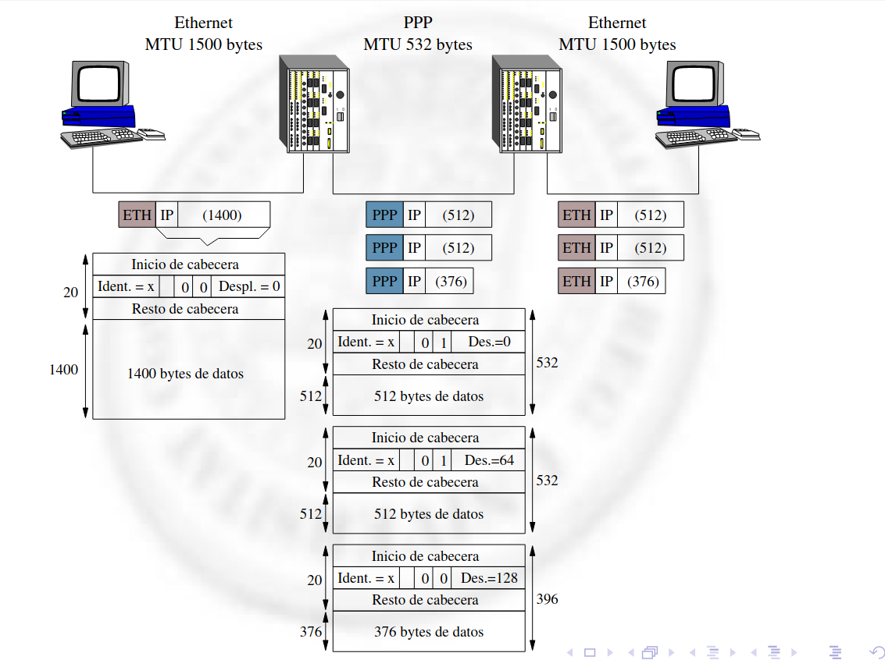
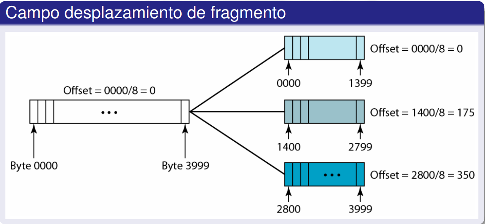
4.5.5 Seguridad en IPv4
El rastreo de paquetes es una técnica que permite a un atacante interceptar y analizar los paquetes que se transmiten a través de una red. Este ataque es pasivo, ya que el atacante no modifica el contenido de los paquetes, solo los observa y captura.
- Solución: El cifrado de los datos garantiza que, aunque un atacante logre capturar los paquetes, no podrá leer su contenido. Usando protocolos como TLS o IPsec, los datos se cifran y solo las partes autorizadas pueden acceder a la información original.
La modificación de paquetes, en este ataque, un atacante altera el contenido de los paquetes que se transmiten en la red. El receptor del paquete modificado cree que el paquete proviene del remitente legítimo, lo que puede dar lugar a acciones no deseadas o maliciosas.
- Solución: Los mecanismos de integridad de datos como HMAC o sumas de comprobación aseguran que los paquetes no se hayan modificado durante el tránsito. El receptor puede verificar que el contenido del paquete es auténtico y no ha sido alterado.
El spoofing es un ataque en el que un atacante falsifica la dirección IP de origen de un paquete, haciéndolo parecer como si proviniera de una fuente legítima. Esto puede permitir al atacante evadir medidas de seguridad o realizar ataques como la denegación de servicio (DoS).
- Solución: La implementación de mecanismos de autenticación del origen, como autenticación mutua en IPsec o protocolos de validación de IP, garantiza que las direcciones de origen de los paquetes sean verificadas y auténticas, evitando suplantaciones.
IPSec
IPSec (Internet Protocol Security) es un conjunto de protocolos de seguridad utilizado para proteger las comunicaciones de red a nivel de IP. Se usa comúnmente para proporcionar seguridad en redes privadas virtuales (VPNs) y otras comunicaciones de red. IPSec puede ser usado en conjunto con IP para crear una red segura entre dos entidades. IPSec proporciona un servicio de seguridad que permite establecer una conexión segura entre dos entidades, lo que garantiza que los datos enviados a través de la red estén protegidos.
Servicios Proporcionados por IPSec:
Definición de Algoritmos y Claves: Las entidades que se comunican acuerdan los algoritmos de cifrado y las claves necesarias para asegurar la comunicación. Esto puede incluir algoritmos como AES para cifrado y SHA para la integridad de los datos.
Cifrado de Paquetes: IPSec cifra los datos antes de enviarlos a través de la red, asegurando que, aunque los datos sean interceptados, no puedan ser leídos sin las claves adecuadas.
Integridad de los Datos: Para evitar la modificación de los paquetes, IPSec implementa mecanismos de verificación de integridad. Esto asegura que los datos no han sido alterados durante la transmisión.
Autenticación del Origen: IPSec también proporciona mecanismos de autenticación que verifican que los paquetes provienen de la fuente legítima y no de un atacante que esté suplantando la identidad del remitente.
4.5.6 Direccionamiento IPv6
IPv6 es la versión más reciente del protocolo de Internet que reemplaza al antiguo IPv4. La transición de IPv4 a IPv6 responde principalmente al agotamiento de direcciones IP disponibles en IPv4 (debido a su límite de 32 bits) y a la necesidad de un sistema más eficiente y escalable para manejar el creciente número de dispositivos conectados a Internet.
En IPv4, las direcciones IP son de 32 bits, lo que da como resultado alrededor de 4.3 mil millones de direcciones posibles. Sin embargo, con el rápido crecimiento de dispositivos conectados, estas direcciones se agotaron. En cambio, IPv6 utiliza direcciones de 128 bits, lo que da como resultado una cantidad prácticamente ilimitada de direcciones (aproximadamente 340 sextillones de direcciones).
Las direcciones IPv6 tienen 8 bloques de 16 bits en hexadecimal, separados por dos puntos. Ejemplo:
47CD:1234:4422:AC02:0022:1234:A456:0124
Los bloques consecutivos de ceros se representan como :: una sola vez por dirección:
47CD:0000:0000:0000:0000:0000:A456:0124 ⇒ 47CD::A456:0124
Las direcciones IPv4 se representan en IPv6 para facilitar la transición, con ::FFFF: seguido de la dirección IPv4. Ejemplo:
::FFFF:193.144.84.77
En IPv6, las máscaras indican la parte de la dirección que define la red. Ejemplo:
- Dirección:
3ffe:ffff:100:1:2:3:4:5/48 - Red derivada con máscara
/48:3ffe:ffff:0100:0000:0000:0000:0000:0000
Tipos de direcciones de IPv6:
- Unicast: Identifica un único host.
- Multicast: Identifica un grupo de hosts (empiezan con
FF). - Anycast: Envía el paquete al host más cercano en la red.
IPv6 mejora la flexibilidad y eficiencia en comparación con IPv4.
4.5.7 Formato del datagrama IPv6
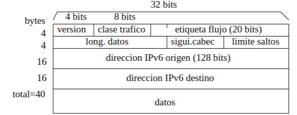
Versión (4 bits): Indica la versión del protocolo IP. Para IPv6, este valor es 6. Clase de Tráfico (8 bits): Define la prioridad y clase de tráfico del paquete, permitiendo especificar si debe ser tratado con baja latencia, alta prioridad, etc. Etiqueta de Flujo (Flow Label) (20 bits): Utilizado para identificar flujos de paquetes que requieren un manejo especial (como los de una misma conexión o flujo de datos). Ayuda a los routers a procesar los paquetes más eficientemente. Longitud de Datos (Payload Length) (16 bits): Especifica la longitud de los datos contenidos en el paquete, excluyendo la cabecera. Siguiente Cabecera (Next Header) (8 bits): Indica el tipo de cabecera que sigue a esta cabecera IPv6. Puede ser un protocolo de capa superior (como TCP o UDP) o una cabecera de extensión de IPv6. Límite de Saltos (Hop Limit) (8 bits): Similar al "Tiempo de Vida" (TTL) en IPv4, especifica el número máximo de saltos que el paquete puede realizar antes de ser descartado. Se decrementa en cada router que atraviesa. Dirección IPv6 Origen (128 bits): Contiene la dirección IP del dispositivo que envió el paquete, permitiendo que el destinatario sepa de dónde proviene. Dirección IPv6 Destino (128 bits): Contiene la dirección IP del dispositivo de destino, necesaria para la entrega del paquete. Datos (variable): Contiene la carga útil del paquete, que incluye la información de la aplicación o de un protocolo de nivel superior.
La cabecera IPv6 tiene un tamaño fijo de 40 bytes y es más simple que la de IPv4, eliminando algunos campos y facilitando el procesamiento. Esta estructura fue diseñada para mejorar la eficiencia y el enrutamiento en redes IPv6.
En IPv6, se ha eliminado la fragmentación en los routers. En IPv4, los routers fragmentan los paquetes si son demasiado grandes para la red siguiente. En IPv6, los routers no fragmentan los paquetes, y si un paquete es demasiado grande, se descarta y se envía un mensaje ICMP ("paquete demasiado grande") al emisor, quien debe reenviar el paquete en fragmentos más pequeños. La fragmentación y reensamblado se realiza únicamente en el host de origen y no en los routers intermedios, lo que mejora la eficiencia en el procesamiento de paquetes.
Se elimina también la suma de comprobación dejándole a las capas superiores la tarea de comprobarlo. Y los paquetes ya no se numeran.
4.5.8 Transición de IPv4 a IPv6
La transición de IPv4 a IPv6 es un proceso gradual en el cual ambos protocolos coexistirán durante un tiempo. Una de las técnicas más comunes para facilitar esta transición es el tunneling. Esta técnica permite que los paquetes IPv6 puedan atravesar redes que solo soportan IPv4 mediante la encapsulación.
Consiste en encapsular los paquetes IPv6 dentro de paquetes IPv4. Para ello se añaden cabeceras IPv4 con las direcciones de los routers que no soportan IPv6. Cuando llegan a zonas de IPv6 se eliminan dichas cabeceras.
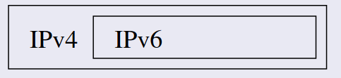
4.6 VPN (Redes Privadas Virtuales)
Es una red utilizada por una organización que utiliza la red pública para comunicarse de forma segura, en vez de tener que crear una propia red, lo que es muy costoso.
Se usan sistemas de encriptación y autenticación.
- IPSec: protocolo de seguridad de IP para soportar comunicaciones seguras e implementar VPNs
- También se pueden implementar mediante túneles IP
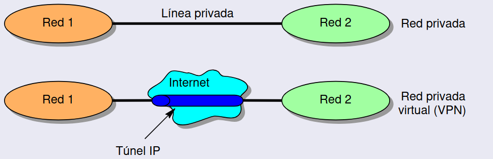
### Túneles IP - El **paquete original se encapsula dentro de un nuevo paquete IP** que puede ser transportado por la red subyacente. - El **paquete encapsulado se envía a través de una red intermedia**, que **no entiende el contenido, pero si la cabecera que lo encapsula**. - En el extremo del túnel, **el encabezado se elimina**, y el paquete original se entrega al destino final.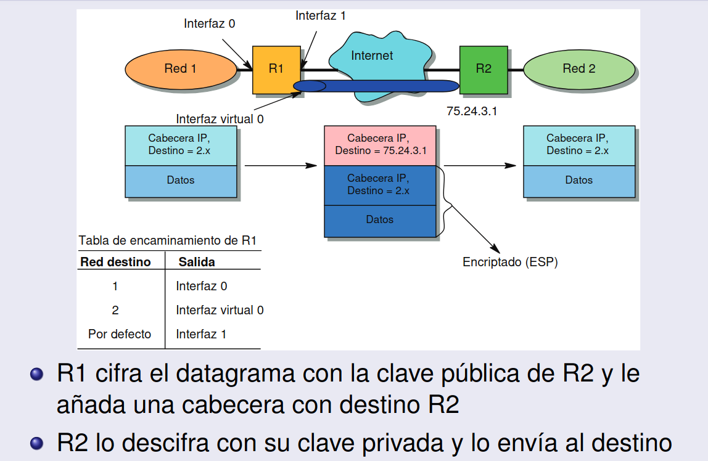
4.7 ICMP (Internet Control Message Protocol)
ICMP es un protocolo de control que funciona sobre IP y permite a hosts y routers informar sobre errores o problemas de la red. Aunque opera en la capa de red, no transporta datos de usuario, sino que envía mensajes para mantener el estado y la integridad de la red. Su entrega no está garantizada, ya que se encapsula en un datagrama IP.
Cada mensaje ICMP incluye:
- Tipo y Código: Definen la naturaleza del mensaje (por ejemplo, solicitud de eco, destino inaccesible, tiempo excedido).
- 8 primeros bytes del datagrama original: Ayudan a identificar el paquete que causó el error.
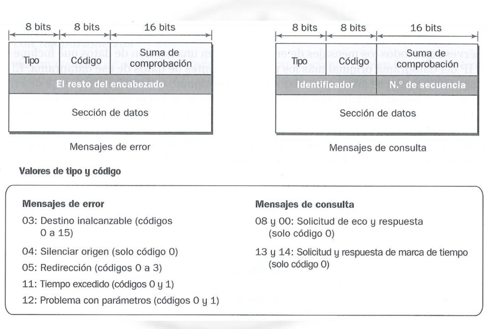
Destino inalcanzable
Lo envía un nodo a la estación origen cuando no puede alcanzar el destino o cuando el datagrama no puede fragmentarse y no puede atravesar una red (tipo ICMP 3).
Tiempo excedido
Cuando un nodo destruye un datagrama porque su contador llegó a 0 lo manda a la estación origen (tipo ICMP 11).
Ralentizar fuente
Para limitar el número de datagramas que las estaciones introducen en la red y evitar la congestión (tipo ICMP 4).
Solicitud de eco y Respuesta de eco
Se utilizan para ver si un destino es alcanzable y se encuentra activo (uso en ping) (tipos ICMP 8 y 0).
Problema de parámetro
Indica que se ha detectado un valor ilegal en un campo de la cabecera (tipo ICMP 12).
Redirigir
Se utiliza cuando un nodo se da cuenta de que hay un mejor camino para enviar el datagrama.
Marca de tiempo y Respuesta a marca de tiempo
Para medir el retardo de la red
Petición de máscara de dirección y Respuesta de máscara de dirección
Empleadas cuando se usan subredes, permiten a un computador conocer la máscara de subred
4.8 DHCP (Dynamic Host Configuration Protocol)
DHCP es un protocolo que permite asignar direcciones IP a los hosts de forma automática y dinámica, ideal para redes donde no hay suficientes IPs para todos los dispositivos, como en redes de ISPs o redes inalámbricas.
Estáticamente: las direcciones las asigna el administrador del equipo. Dinámicamente: con DHCP.
Cuando un dispositivo se conecta a la red, el proceso DHCP se realiza en cuatro pasos:
-
Descubrimiento (DHCPDISCOVER): El host envía un mensaje broadcast con una IP de origen en ceros y la IP de destino en 255.255.255.255, buscando un servidor DHCP disponible.
-
Oferta (DHCPOFFER): El servidor DHCP responde con una dirección IP, su máscara de red, el tiempo de concesión de la IP, el gateway predeterminado y los servidores DNS disponibles.
-
Solicitud (DHCPREQUEST): El cliente selecciona una de las ofertas (si recibió varias) y responde indicando la IP que desea aceptar.
-
Confirmación (DHCPACK): El servidor DHCP envía una confirmación (ACK) al cliente, estableciendo la asignación de la IP para el tiempo acordado.
4.9 NAT (Network Address Translation)
NAT es un sistema que permite que varios dispositivos dentro de una red privada usen una misma IP pública válida para conectarse al exterior. Utiliza direcciones especiales para redes privadas, que los routers de Internet ignoran. Estas son:
- Clase A: 10.0.0.0/8
- Clase B: 172.16.0.0/12
- Clase C: 192.168.0.0/16
Un servidor NAT tiene dos interfaces con direcciones IP distintas:
- IP pública: Para conectar al exterior.
- IP privada: Para conectar a la red interna.
Los dispositivos de la red privada configuran la IP privada del NAT como su gateway, y este modifica los datos de origen (IP y puerto) de cada paquete antes de enviarlo al exterior. También mantiene una tabla de redirección para asociar cada paquete de respuesta con el dispositivo interno correspondiente.
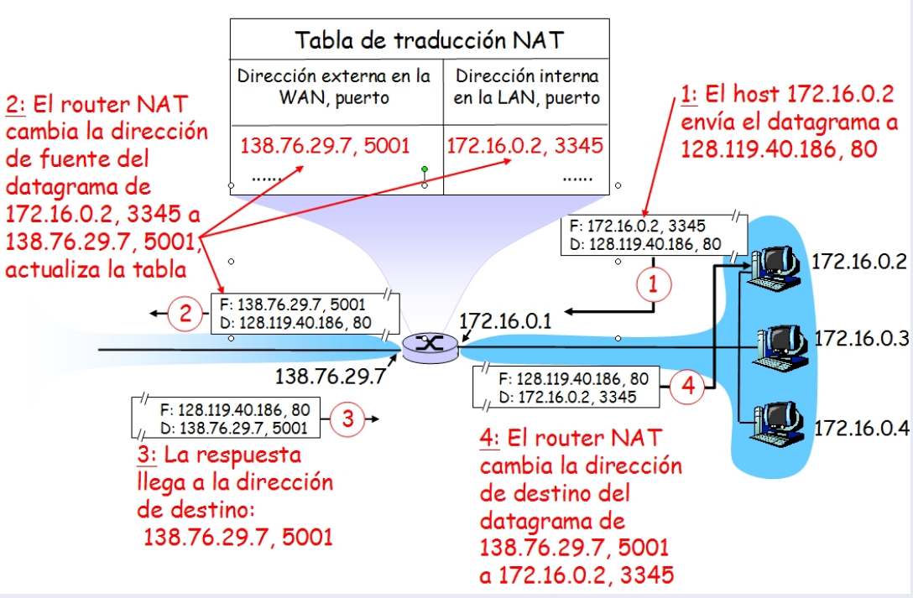